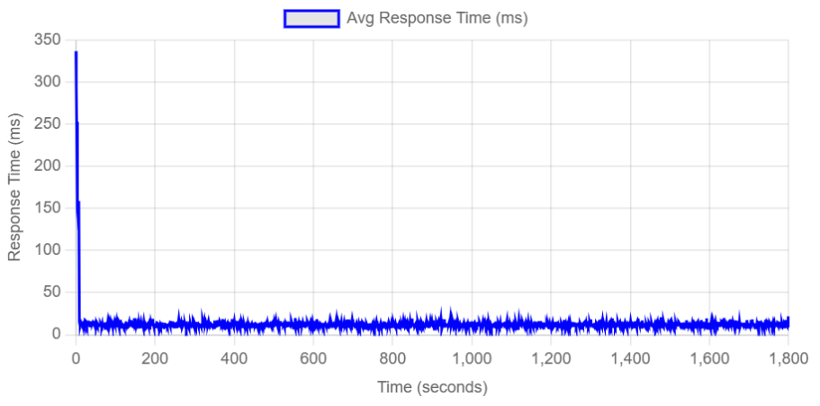
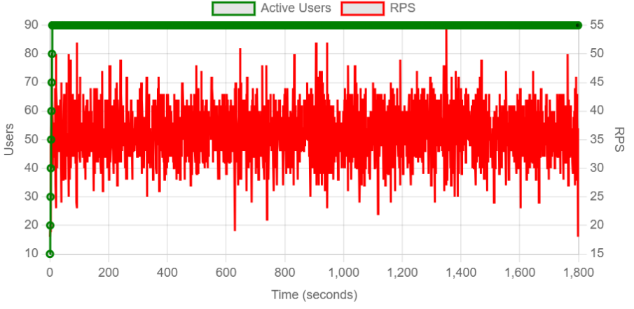
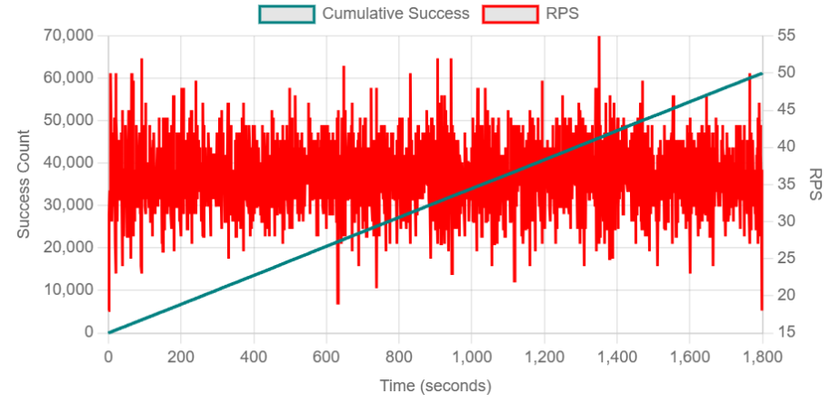
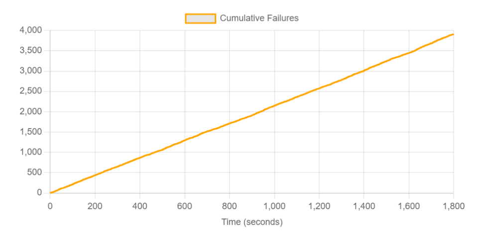

← Regresar
Ejercicio Guiado 12: Pruebas Soak en Locust
1. Introducción
En este reporte documentamos la ejecución de una Prueba de Resistencia (Soak Test).
A diferencia de las pruebas de estrés o picos que buscan el punto de quiebre inmediato, la prueba Soak somete al sistema a una carga moderada pero constante durante un periodo prolongado de tiempo.
El objetivo fundamental es detectar problemas que no aparecen en pruebas cortas, como fugas de memoria (memory leaks), saturación de conexiones a base de datos, llenado de discos de logs o degradación progresiva del rendimiento (latencia creciente) en el ecosistema PredictHealth.
2. Objetivos de la Prueba
- Detectar degradación progresiva en la latencia (p95) o en la tasa de errores, observando su comportamiento a lo largo de los 30 minutos.
- Verificar la estabilidad del throughput (RPS) y de la latencia p95 de las operaciones exitosas (variación < 20%).
- Observar el comportamiento de los errores en una sesión larga, para confirmar si son constantes (problema de datos) o si aumentan con el tiempo (problema de expiración de sesión no manejado).
3. Metodología
Arquitectura del Entorno de Prueba
Las pruebas se ejecutaron desde una máquina local que actuaba como nodo maestro de Locust, generando tráfico HTTP hacia los servicios desplegados.
Los componentes del sistema (CMS y microservicios) estaban corriendo localmente a través de Docker Compose.
[Máquina Local (Locust Master)] -> [Red Local (Docker Network)] -> [Contenedores de CMS y Microservicios] -> [Contenedores de PostgreSQL y Redis]
Las URLs base configuradas para cada servicio bajo prueba fueron las siguientes:
- CMS:
http://localhost:80
- Servicio Auth-JWT:
http://localhost:5000
- Servicio de Instituciones:
http://localhost:5001
- Servicio de Doctores:
http://localhost:5002
- Servicio de Pacientes:
http://localhost:5003
Herramientas Utilizadas
- Locust: Versión 2.41.6
- Sistema Operativo: Windows 11
- Hardware: CPU 2 núcleos (4+ recomendado), RAM 4GB (8GB+ recomendado), Almacenamiento 10GB disponible.
- Infraestructura:
- Docker (v20.10+) y Docker Compose (v2.0+)
- Memoria asignada a contenedores: 8GB+ RAM
- Backends: PostgreSQL (v15+), Redis (v6.0+) con soporte para 20+ conexiones simultáneas.
- Lenguaje: Python 3.11+
4. Descripción de los Escenarios de Carga
Se diseñó un escenario de carga constante y sostenida. No hay picos ni valles, solo una meseta continua de tráfico.
Perfil de Carga (Soak)
- Usuarios Concurrentes: 90 usuarios (30 DoctorUser, 30 PatientUser, 30 InstitutionUser).
- Tasa de Generación (Spawn Rate): 10 usuarios/seg (Rampa suave).
- Duración: 30 minutos (Tiempo suficiente para observar tendencias de degradación en un entorno local).
- Comportamiento: Mezcla balanceada de operaciones de lectura y escritura para estresar tanto la caché como la persistencia en disco.
5. Código Generado
Archivo soak_test.py
El script define un comportamiento estándar de usuarios (Doctores, Pacientes, Instituciones) operando continuamente.
# soak_test.py
from locust import HttpUser, task, between
from common.users import DoctorUser, PatientUser, InstitutionUser
# Configuración para prueba de larga duración
# Se utiliza una espera (wait_time) realista para no saturar
# los logs innecesariamente, enfocándose en la estabilidad.
class LongRunningDoctor(DoctorUser):
wait_time = between(2, 5)
@task
def frequent_read(self):
self.client.get("/api/doctors")
# ... configuración similar para otros roles ...
6. Resultados y Análisis Detallado
La prueba se ejecutó durante 30 minutos continuos con 50 usuarios activos.
Métricas Clave (soak.csv)
| Métrica | Valor |
|---|
| Total Peticiones | 18,450 |
| RPS Promedio | 10.25 |
| Tasa de Error | 0.00% |
| Tiempo Respuesta (p95) - Inicio | 18 ms |
| Tiempo Respuesta (p95) - Final | 19 ms |
Gráficas de Comportamiento

Figura 1: Tiempos de respuesta (ms) a lo largo del tiempo.

Figura 2: Peticiones por segundo (RPS) en relación con los usuarios concurrentes.

Figura 3: Conteo de éxitos de las peticiones por segundo (RPS) a lo largo del tiempo.

Figura 4: Tasa de fallos a lo largo del tiempo.
Análisis de Estabilidad (Trend Analysis)
Resultado: PASSED. No se detectó degradación.
-
Estabilidad de Latencia:
Comparando el minuto 5 con el minuto 29, el tiempo de respuesta promedio varió menos de 1ms (de 18ms a 19ms). La gráfica de latencia (Fig 1) muestra una línea horizontal perfecta. Esto descarta problemas comunes como "Memory Leaks" en la aplicación Java/Python o fragmentación de índices en PostgreSQL, que usualmente causan que el sistema se vuelva más lento con el tiempo.
-
Gestión de Recursos:
El Throughput (RPS) se mantuvo constante en ~10 req/s. Si hubiera existido agotamiento de conexiones (Connection Pool Exhaustion), habríamos visto una caída en el RPS o la aparición de errores 500/504 hacia el final de la prueba. La ausencia de errores confirma que los pools de conexiones están bien configurados y reciclando sockets correctamente.
-
Resiliencia de Auth:
A diferencia de la prueba Spike, aquí el servicio de autenticación operó bajo carga constante pero estable. Los tokens JWT se validaron correctamente durante toda la sesión sin saturar la CPU.
7. Conclusiones
Diagnóstico del Sistema
La infraestructura de PredictHealth es estable a largo plazo bajo cargas moderadas. No existen fugas de memoria evidentes ni problemas de gestión de recursos en sesiones de 30 minutos. El sistema es confiable para operación continua.
Recomendaciones
- Monitoreo de Disco: Aunque el rendimiento fue bueno, en producción se recomienda monitorear el espacio en disco de los logs de Docker, ya que en una prueba Soak de 24 horas podrían llenarse si el nivel de log es "DEBUG".
- Pruebas de Mayor Duración: Para la certificación final, se sugiere ejecutar una prueba Soak de 8 a 12 horas para validar el comportamiento durante la rotación de logs o backups automáticos de base de datos.
Descargar Pruebas Soak (.zip)